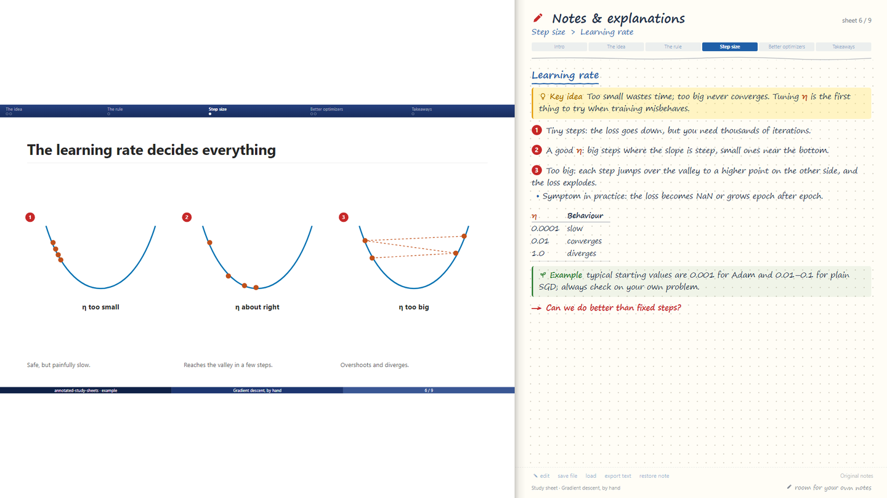
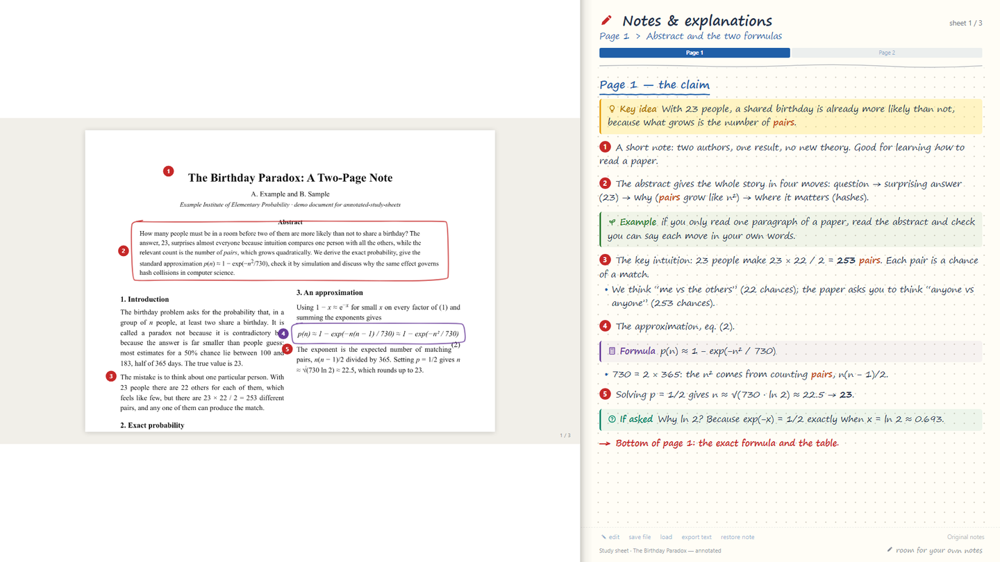

✎ Annotated Study Sheets
A skill for AI coding agents that turns papers, PDFs and slides into hand-annotated study sheets — and builds offline HTML decks where N reveals the study sheet.

Study deck →
“Gradient descent, by hand”. Press N on any slide.
“Gradient descent, by hand”. Press N on any slide.

Annotated paper →
A two-page note, explained region by region. Press N for the clean page.
A two-page note, explained region by region. Press N for the clean page.
Install and docs: github.com/RodrigoPascual/annotated-study-sheets